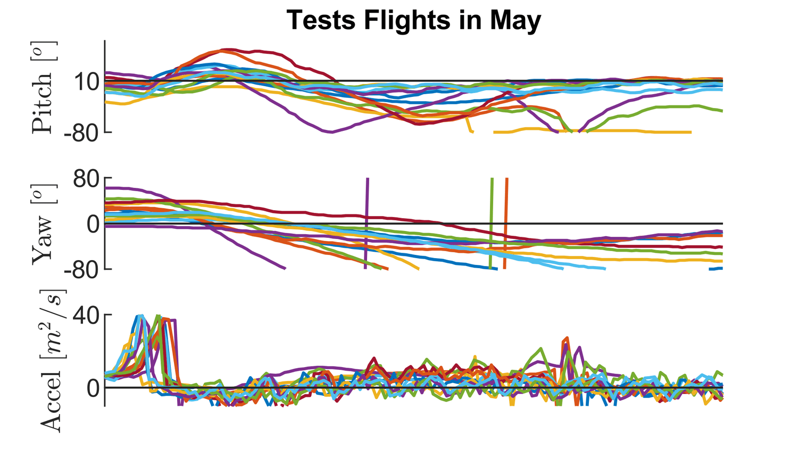

Controller

Figure 1. Final version of overall controller. Created on late May.
Within the overall controller, the most problematic part is the yaw controller (Figure 1). It is a simple proportional feedback controller. During my over 30 flight tests in May, the ornithopter keeps yawing to the left in random amounts (Figure 2).

Figure 2. 13 sets of data collected in May. Earlier tests didn’t have an onboard data collection system.
To figure our how much yaw motion is caused by the ornithopter itself, I need to eliminate the yaw motion caused by my right-handed launching motion. Thus, I turned to free-fall launch (Video 1).
Video 1. Free-fall launches with rudder trimmed at 0 degrees. TYPO: THE TAIL IS NOT FIXED. IT IS COMMANDED BY CONTROLLER.
Free-fall launches gave repeatable measurements about how much the ornithopter itself yaw to the left. Although the yaw controller eventually forced the ornithopter to yaw back, it overcompensated. To reduce the yaw error and avoid overcompensation, I trimmed the equilibrium position of the rudder to 10 degrees. This constant feedforwards “controller” eliminated the yaw-to-left motion (Video 2).

Video 2. Free-fall launches with rudder trimmed at 10 degrees